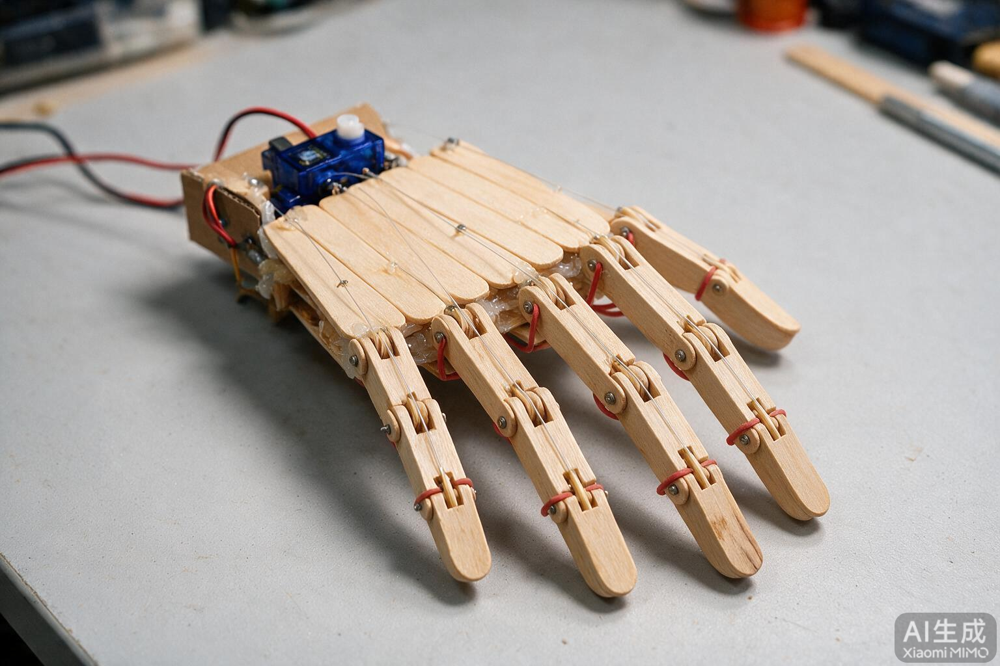

视觉采集 · 3D 复现 · 机械手
一天内完成从文献检索、视觉采集原型、体感交互验证，到低成本机械手结构方案的完整闭环， 并明确下一阶段以硬件实现为主线。
EXECUTIVE SUMMARY
本次工作围绕「灵巧手控制外设」这一命题展开。上午以文献与开源项目检索明确技术路线， 下午转入工程实现：用浏览器 + 摄像头 + 手部关键点检测搭出关节角采集链路， 再以 Three.js 完成 3D 复现与体感交互验证，最后把方向收敛到可制造的硬件结构方案。
核心结论有三点：其一，视觉主端（MediaPipe → 关节角）已可稳定运行，具备作为遥操作输入的能力； 其二，腱绳欠驱动五指手在低成本条件下即可实现，冰糕棒可作为 3D 打印的结构替代层； 其三，开源社区存在大量可直接借鉴的固件与结构文件，无需从零开始。
WORK TIMELINE
围绕磁场数据拟合、应变检测、数据手套与灵巧手控制外设，梳理出「磁场 + 应变」双模态主线，并确认开源对标项目。
搭建网页采集原型，MediaPipe 21 点手部检测，实时计算五指 MCP/PIP/DIP 角度；解决权限、模型加载与路径问题，模型资源本地化。
关节点实时驱动 3D 手部骨架，并以关节角驱动参数化手指；重写轨道相机，交互手感与阻尼显著改善。
用手势控制方块移动与放置，作为「输入 → 执行」闭环的趣味验证；修复原地叠塔漏洞，握拳改为急刹功能。
输出欠驱动腱绳五指手图纸、BOM、打印参数与淘宝下单文案；提出冰糕棒替代方案并渲染实物效果图。
整理开源最小可抄清单，明确后续以结构、传动、驱动、装配调试为重点。
VISION PIPELINE
整条链路运行在浏览器内，视频不出本地。摄像头帧经手部关键点模型推理得到 21 个三维点， 再依向量夹角解算各指关节角，同时驱动画面叠加与 3D 数字手。
[object Event] → 版本号不存在导致 404，改用 0.10.21import('vendor/…') 被当包名 → 改为 URL 解析videoTime 非标准属性，改用 currentTimeINTERACTION TESTBED
为验证「手势 → 执行」闭环的可用性，当天做了一款搭积木小游戏作为交互实验台：手掌移动牵引方块， 拇指与食指捏合放置，握拳急刹。它验证了手势驱动执行器的可行性，也充当了硬件遥操作的手感预演。
该实验台随后从交付链路中收敛掉 —— 最终只保留视觉主端、硬件图纸与 MC 桥接三部分， 以免分散主线；本节保留其结论，作为「手势输入足以驱动执行」的证据。
「如果手掌可以控制方向，那么我只要手掌一直不动就可以一直在原有的积木上叠放。」 —— 来自实机试玩的关键反馈，直接推动了玩法与手势语义的重构
HARDWARE DESIGN
结构上采用欠驱动腱绳五指手：每指三节，单腱绳拉动、弹簧回位，舵机置于腕部。 这一形态在低成本条件下即可实现，且能直接对接视觉主端的关节角输出。

| 维度 | 3D 打印版 | 冰糕棒版 |
|---|---|---|
| 结构来源 | STL 打印，尺寸精确 | 棒材+竹签铰接，手工修配 |
| 成本 | ¥85–110 | ¥25–40（手工） |
| 铰接精度 | 高，孔位一致 | 一般，需钻孔修配 |
| 夹持力 | 较好 | 演示级 |
| 交付方式 | 淘宝代打 + 外购件 | 文具店 + 电子配件 |
| 适用 | 长期使用 / 课题 | 快速原型 / 教学 |
OPEN SOURCE BENCHMARK
GitHub 上并无「冰糕棒机械手」同类项目，但腱绳手与视觉驱动机器人手生态成熟。 据此收敛出一份最小可抄清单，避免从零造轮子。
| 项目 | 可抄内容 | 用途 | 星标 |
|---|---|---|---|
FreeHandjfasoltholmes |
STL 结构件、工程图 PDF、ESP32 固件、MediaPipe 映射 | 主参考，与你路线同构 | — |
Tendon-Driven HandAbdul-Arham123 |
Arduino/Python 代码、论文式设计 | 腱绳结构与代码参考 | — |
Galileo Handturing-lab |
控制板原理图、EMG 电路、Keil 固件 | 要做肌电或自制 PCB 时参考 | ★2 |
| InMoov 生态 多仓衍生 |
控制代码、Unity/VR 遥操作、LSTM 手势 | 结构在 Thingiverse，代码在此 | ★17 |
Awesome-Dexterous-HandsCyanHaze |
论文/数据集/仿真/硬件资料合集 | 扩展阅读与选型 | ★36 |
handfiles/ 的 STL 与工程图 PDF — 冰糕棒方案只需拇指座 STLfirmware/src/main.cpp + platformio.ini.ino 两份CONCLUSION
当日工作已把「调研 → 软件验证 → 硬件方案」三段走通。软件侧证明了视觉主端可用； 硬件侧给出了两条成本可控的制造路径，并锁定了可借鉴的开源资源。后续以硬件实现为主线。
按「先验证单点、再整机装配、最后联调」的顺序推进，每步都有可检验的交付物。